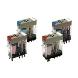

Building Automation
Industrial Automation
Power Automation & Safety


Bangladesh Distributor
General Purpose Relays
OMRON provides General-purpose Relays, I/O Relays, Power Relays, Latching Relays, and Ratchet Relays.
|
|
Features |
|
|
|
| Engineering Data | Further Information |
General-purpose Relay Glossary
General Relay Terms
Relay
A device designed to cause a sudden, predicted change in a single or multiple electrical output circuits when certain conditions are satisfied by the electrical input circuit that controls the relay device.
Note:Relays can be classified into electromechanical relays that are used for mechanical operations and static relays that are used not. Based on the operating principle, further classification includes electromagnetic relays, thermal relays, piezo-electric relays (electrostrictive relays), and contactless relays. The IEC classifies relays into all-or-nothing relays, which operate and release based on whether the input quantity is within the operating region or is effectively zero, and measuring relays, which operate when the characteristic quantity with a specified precision reaches the operating value.
DC relays
Relays designed to operate with DC input.
AC relays
Relays designed to operate with AC input.
Relays with polarity
DC relays that change status depending on the polarity of the control input current.
Note:There are single-side stable relays, double-sided stable relays, and centrally stable relays. Relays that are not affected by the polarity of the control input current are called nonpolarized relays (neutral relays).
Sealed relays
Relays that are completely encased in a container and sealed.
Note:Generally, sealed relays are sealed in a metal and metal or metal and glass container by welding or similar method.
Enclosed relays are also called sealed relays even though they are simply closed without using welding or similar sealing methods.
Hinged relays
This classification refers to the structure of the electromagnet.
Hinged relays directly or indirectly switch contacts by the rotating movement of the armature around the fulcrum.
Note:Hinged relays with armatures that move at right angles to the core axis direction are called side armature type hinged relays.
Those with armatures that move in the direction of the axis are called end-on armature type hinged relays.
Plunger Relays
This classification refers to the structure of the electromagnet. The armature in a plunger relay is at the center of the coil and it moves along the coil axis.
Contacting section
Contact configuration
The contact configuration is called the contact mechanism. Types of contacts include NC contacts (break contacts), NO contacts (make contacts), and transfer contacts.
The number of contact poles is referred to as the number of contact circuits.
Contact symbols
The following symbols are used based on the contact mechanism.
| NO | NC | DT (NO/NC) | MBB | |
| Catalog contact symbols | ||||
| JIS contact symbols |
Note:Except for special cases, JIS contact symbols are used in the Technical Guide for General Relays sections.
Static relays
Relays designed to get a response not from a mechanical operation but, e.g., from an electrical, electromagnetic, or optical action.
Note: Solid state relays (SSRs) fall into this category.
Flexure is a type of drive method for the contact spring. With flexuretype relays, the contacting force is obtained from a stud, card, or other pushing force.
Lift-off is a type of drive method for the contact spring. After contact, the card or stud separates from the contact spring and the contacting force is derived from the residual bend in the moving spring.
Note: The pressure of a coil spring is also sometimes used.
Opposing contact springs act as a pair and the contact is attached to the tip of each spring, which increases the contact reliability.
Moving contacts
Moving contacts have a drive mechanism or are directly driven by part of it. Contacts that are not directly driven are called stationary contacts.
Stationery contact
Stationary contacts are designed for continuous contact.
Note:Terminals, connectors, etc., fall into this group.
The term "stationary contact" is sometimes used to indicate a fixed contact, the opposite of a moving contact.
Make contact (NO contact)
Relays or switches that are normally open and close upon operation are called NO contacts. They are also called front contacts.
Break contacts (NC contacts)
Relays or switches that are normally closed and open upon operation are called NC contacts. They are also called back contacts.
BBM (Break Before Make) contacts (Non-shorting contacts)
BBM contacts are part of the group of contacts that have a specified operating sequence. BBM contacts are a set of contacts in which the contacts that should open at operation open before closing the contacts that need to close. These are called transfer contacts.
MBB (Make Before Break) contacts (Shorting contacts)
MBB contacts are part of the group of contacts that have a specified operating sequence. MBB contacts are a set of contacts in which the contacts that should close at operation close before opening the contacts that need to open.
Contact springs
Springs for adding contacting force to the contact's contacting section.
The force that operates on a contact to open it.
The operating speed when a closed contact opens.
The gap between a set of contacts when they are open.
Note:This is the shortest distance between two conductors that make up the contacts.
Clearance
The shortest distance between two isolated bare live parts that must be isolated from each other.
Creeping distance
The shortest distance along the surface of an insulating material placed between two bare live parts that must be insulated from each other.
Double throw
A set of contacts that have two contacting positions, each of which closes a different circuit. Contact sets consisting of only one contacting position for closing the circuit are called single throw contacts.
The sliding action performed after two opposing contacts make contact.
This wiping action helps to reduce the impact of film or dust that collects on the surface of contacts.
Rated load
A standard value for stipulating contact performance, expressed as a combination of contact voltage and contact current.
Rated carry current
The current that can be supplied continuously to a contact without exceeding the maximum temperature when the contact is not switching (according to JIS C4530).
The maximum load capacity that can be switched. Design circuits to ensure that this value is not exceeded during operation. Maximum switching capacity is expressed as VA for AC relays and W for DC relays.
The percentage of failures per unit time during continuous relay switching (number of operations) under individually specified test types and loads. The failure rate will change depending on the switching frequency, the environmental conditions, and the expected reliability level. Failure rates must always be checked on equipment under real operating conditions.
In this guide, the failure rate is listed as the P level (reference value). This expresses the failure level at a reliability level of 60% (λ 60) (JIS C5003).
| Level | Failure rate(/operation) |
| ・ ・ ・ | |
| L | 5 x 10-6 |
| M | 1 x 10-6 |
| N | 0.5 x 10-6 |
| P | 0.1 x 10-6 |
| Q | 0.05 x 10-6 |
| ・ ・ ・ |
Example:
λ60 = 0.1 × 10−6/ operation means that failures can be expected at a reliability level of 60%.
Contact resistance
Contact resistance is a combination of the inherent resistance of the conductors that make up the armature, terminals, contacts, etc., the boundary resistance where two contacts meet, and the concentrated resistance.
The contact resistance values listed in this catalog are the initial specified values. The size of the values does not indicate performance during actual operation.
Contact resistance is measured using the voltage drop method (four terminal method) shown in the following diagram by applying the measurement currents stipulated in the table.
(Contact resistance for DC relays is the average of measured values for both for forward and reverse polarity.)
Test current (JIS C5442)
| Rated current or switched current (A) | Test current (mA) |
| Less than 0.01 | 1 |
| 0.01 or higher but less than 0.1 | 10 |
| 0.1 or higher but less than 1 | 100 |
| 1 or higher | 1,000 |
The maximum contact voltage that can be switched. Never exceed this value during operation.
The maximum contact current that can be switched. Never exceed this value during operation.
Bounce
Undesirable intermittent switching that occurs between contacts when they are turned ON or OFF. The time that this intermittent switching continues is called bounce time.
The problem where an ON contact repeatedly switches due to an external cause. The time that chattering continues is called chattering time.
The following diagram shows the relationship between the response of each part when a coil turns ON and bounce.
Measurement circuit
Contacting surfaces cannot open easily, even though they are not fused together or mechanically caught.
Note:
Gluing occurs easily for contact surfaces of a low hardness that are clean.
Contacting surface and surrounds fuse together and are difficult to open.
Deformation due to contact wear and transfer causes opposing contacting surfaces to become mechanically caught and difficult to open.
Contacting surfaces and surrounds are affected by electrical discharge or Joule heat and part of the material from one contact transfers to the other opposing contact.
An arc that transfers contact material from the anode side to the contact surface on the cathode side.
Note:
It is said that the direction of the transfer is affected by the contact material, the balance of heat in a circuit, etc.
An arc that transfers contact material from the cathode side to the contact surface on the anode side.
The problem where the contact resistance drops dramatically for contacts that make contact through a contact film, because the contact voltage has exceeded a certain value causing that film to be electrically damaged.
Carbon generated by the electrical switching operation of contacts that attaches to the surface of contacts and causes activation.
A brown or black-brown organic compound in powder form that is created by the reactions of organic gases on contact surfaces.
Note:
Brown powder is generated by the rubbing action of contacts when certain organic gases are present in the operating environment, mainly during switching of platinum contacts, and can cause contact damage.
Sudden loss of insulation due to the voltage applied to two electrodes either side of the insulating material.
Compound contacts
Contacts made from two or more layers of different materials.
Joined contacts
Contacts made of two different metals pasted together.
Contacts made using diffusion processing.
Contacts with a multi-layer construction, using plating, joining, or other method.
Plated contacts
Contacts with plating on the contacting surface.
Sintered contacts
Contacts created using powder metallurgy.
Note:
There are various types, such as metal sintered contacts and compound sintered contacts.
Inrush current
Current larger than normal that flows instantaneously or transiently when a contact is closed.
Coil Section
Coil Symbols
The following diagrams are used to indicate the coil drive types.
| Single stable coil | Double-winding latchingcoil | Singlewindinglatchingcoil | ||
| Polarized coil | Nonpolarized coil | 4-terminal coil | 3-terminal coil | |
Rated voltage
Standard voltage applied to the operating coil when a relay is used under normal conditions (according to JIS C4530).
Rated current
The standard current flowing to the coil to enable use of a relay under normal conditions (JIS C4530). The value is given at a coil temperature of 23°C The tolerance, unless otherwise specified in the model specifications, is ＋15% and −20%.
Coil resistance
Coil resistance is the resistance between coil terminals when the coil temperature is 23°C
The tolerance is ±15% unless otherwise specified in the model specifications. (The coil resistance for AC specifications and the coil inductance are the reference values.)
The power consumed by the coil when rated voltage is applied to the coil (rated voltage × rated current). The rated power consumption for AC specifications is the value at a 60-Hz frequency.
Must-operate voltage
The minimum voltage required to operate the relay (JIS C5442). The value is given for a coil temperature of 23°C
The maximum voltage that the relay for which the relay will release when the voltage drops dramatically or gradually decreases (JIS C5442).
The value is given for a coil temperature of 23°C
Example: MY4 DC Models
The distributions of the must-operate voltage and the must-release voltage are shown in the following graph.
As shown in the graph, the relay operates at voltages less than 80% of the rated voltage and releases at voltages greater than 10% of the rated voltage.
Therefore, in this catalog, the operating and must-release voltages are taken to be 80% max. and 10% min. respectively of the rated voltage.
The status where power is supplied to contacts and the power that has been supplied to the coil is turned OFF then ON. Also the mustoperate voltage at that time.
(The coil voltage, contact current, and ambient temperature are set as conditions.)
Minimum pulse width
For latching relays, the minimum pulse width of the rated voltage applied to coils to set and reset the contacts. The value is the rated voltage applied to the coil at an ambient temperature of 23°C
Coil inductance (listed for general relays only)
For DC relays, the value found from the time constant by adding rectangular waves. For AC relays, the value at the rated frequency.The values are different for operation and release.
A magnetic body inserted in the coil to effectively operate the magnetomotive force in an electromagnet.
Note:
The term core is used mainly for fixed magnetic objects. Those that move inside the coil are called moving cores. Sometimes pole pieces are attached to effectively utilize the magnetic attraction.
A short-circuited coil for partially delaying change in magnetic flux by using the current generated by mutual inductance between the magnetic pole of a DC electromagnet that has been partially encased and an excitation coil. Shading coils reduce the vibration of the moving parts.
Electrical Characteristics
Operating Time
The time between the moment the rated voltage is applied to the coil when the contact operates. For relays with more than one contact,the operating time is the time until the slowest contact operates,unless otherwise defined (JIS C5442).
The operating time is given for a coil temperature of 23 °C and does not include bounce time.
Set time (latching relays only)
The time from the moment when the rated voltage is applied to a set coil until the contact operates. For relays with more than one contact,the set time is the time until the slowest contact operates, unless otherwise defined (JIS C5442).
The set time is given for a coil temperature of 23 °C and does not include bounce time.
Release time
The time from the moment the rated voltage is removed from the coil until the contact releases. For relays with more than one contact, the release time is the time until the slowest contact releases, unless otherwise defined (JIS C5442).
For relays with only NO contacts, the release time is the time until the slowest NO contact opens.
The release time is given for a coil temperature of 23 °C and does not include bounce time.
Reset time (for latching relays only)
The time from when the rated voltage is applied to the reset coil until the contact releases. For relays with NO contacts only, it is the time until the slowest NO contact opens.
For relays with more than one contact, the reset time is the time until the slowest contact releases, unless otherwise specified.
The reset time is given for a coil temperature of 23 °C and does not include bounce time.
Bounce
Intermittent switching between contacts due to shock and vibration caused by the impact of the moving parts of relays (armatures)colliding with the core or other contacts (JIS C5442).
The bounce time for NO contacts when the coil rated voltage is applied at a coil temperature of 23°C
The bounce time for NC contacts when the coil rated voltage is removed at a coil temperature of 23°C
Number of relay operations per unit time.
Insulation resistance
The resistance of the isolated sections between contacts and coils,conducting terminals and uncharged metallic parts (e.g., core frame and core), or between contacts.
This value is given for the relay and does not include lands on PCBs.
1. Between coils and contacts: Between coil terminals and all contact terminals
2. Between contacts with different polarity: Between contact terminals of different polarity
3. Between contacts with the same polarity: Between contact terminals with the same polarity
4. Between set coils and reset coils: Between set coil terminals and reset coil terminals
Dielectric strength
The maximum value before insulation damage occurs when voltage is applied for one minute to an isolated metallic part (especially charged metal). The voltage is applied at the same location as the insulation resistance.
The leakage current (the current used to detect insulation damage) is normally 1 mA.
Sometimes, however, leakage currents of 3 mA and 10 mA are used.
The maximum abnormal voltage that the relay can withstand when the voltage surges momentarily due to lightning, switching an inductive load, etc. The surge waveform, unless otherwise specified,is the standard impulse voltage waveform according to JIS C5442,i.e., 1.2 × 50 μs.
FCC Part 68 specifies 10 × 160 μs ± 1,500 V.
Vibration
The vibration resistance of a relay is divided into two categories:
Destruction, which quantifies the characteristic changes of, or damage to, the relay due to considerably large vibrations which may develop during the transportation or mounting of the relay, and malfunction durability, which quantifies the malfunction of the relay due to vibrations while it is in operation.
Shock
The shock resistance of a relay is divided into two categories:
Destruction, which quantifies the characteristic change of, or damage to, the relay due to considerably large shocks which may develop during the transportation or mounting of the relay, and malfunction durability, which quantifies the malfunction of the relay while it is in operation.
The durability of contacts when no load is applied and the contact is switched at a specified switching frequency.
The durability of contacts when a rated load is applied and the contact is switched at a specified switching frequency.
If different metals are attached at both ends and the temperatures where the metals are connected are held at different temperatures,current will flow in one direction in the circuit. The electromotive force that causes this current is called thermoelectromotive force.
Thermoelectromotive force occurs between the different metals in terminals, armatures, and contacts in relays. This Thermoelectromotive force is the reason the actual temperature and the measured temperature are different when relays are used to switch thermocouples.
High-frequency isolation (Listed only for high-frequency relays for PCBs.)
Indicates the degree of high-frequency signal leakage between contact terminals that are in an open status and unconnected terminals.
Insertion loss (Listed only for high-frequency relays for PCBs.)
The loss of high-frequency signal between contact terminals in a closed circuit.
Return loss (Listed only for high-frequency relays for PCBs.)
The quantity of high-frequency signal reflection that occurs in a transmission path.
V.S.W.R.(Listed only for high-frequency relays for PCBs.)
The voltage standing-wave ratio that occurs in transmission paths.
Note: Formula for converting return loss to V.S.W.R.
Example Method for Measuring Highfrequency Characteristics
Contacts not related to the measurement are terminated at 50Ω.
Maximum high-frequency carry power (Listed only for high-frequency relays for PCBs.)
The maximum high-frequency signal power that can pass between contact terminals in a closed state.
Maximum high-frequency switching power (Listed only for high-frequency relays for PCBs.)
The maximum high-frequency signal power that a contact can switch.
The electrical durability will be shorter than for rated loads.
Crosstalk characteristics (Listed only for high-frequency relays for PCBs.)
The degree of high-frequency signal leakage between contact circuits.
The TV rating is one of the common ratings used to evaluate the inrush current resistance characteristics in the UL and CSA standards. It indicates the load switching level for a relay, including the inrush current.
Relays used in television power supplies, for example, need to have a TV rating.
A tungsten lamp is used as the load in the switching test (durability test) and a switching durability of 25,000 times total is required.
| TV rating | Inrush current | Steady-statecurrent | Example models |
| TV-3 | 51 A | 3 A | G2R-1A |
| TV-5 | 78 A | 5 A | G2R-1A-ASI |
| TV-8 | 117 A | 8 A | G2R-1A-TV8-ASI |
Problems and Status
The problem where discharge between opposing conductors causes a short-circuit.
This often occurs with contacts used with medium and large currents.
The wear of contacts due to mechanical causes, such as wear during repeated operation.
The expending of contacts due to electrical, thermal, chemical, and other causes during the repetition of contact switching.
The problem where contact surfaces become dirty and discharge occurs more easily.
Note:
If precious metal contacts switching in an environment with certain types of organic gases present, the organic gas that attaches to the surface of the contacts will break down as a result of the discharge and create black powder (e.g., carbon),which makes discharge more likely to occur.
Metal oxides, sulfides, and other film that is generated on or attaches to contact surfaces and cause boundary resistance.
The magnetic characteristics caused by the shape around directly opposing magnetic surfaces.
Noise due to mechanical vibration caused by AC poles or rectifier wave drive with insufficient smoothing.
Soak
Removing the difference due to the effect of magnetic history by applying a saturation current to the operating coil during measurement of operation or release voltage (or current) or during testing.
Note: The current used is called the soak current.
Operating Forms
Single stable (standard)
Relays where the contacts switch based on the non-excitation and excitation of the coil and otherwise have no special functions based on operating elements.
Relays with set coils and reset coils and a latching configuration to hold the set status or reset status.
Single-winding latching
Relay with one coil and a latching configuration that can switch to and hold a set or reset status according to the polarity of the applied voltage.
Stepping (Listed for general relays only.)
Relay that turns multiple contacts ON and OFF in order each time an input pulse is received.
Ratchet (Listed for general relays only.)
A type of stepping operation, where the contacts alternate between ON and OFF for each input pulse.
Dimensions and Shapes
Dimensions
PCB Relays
Limited to relays characterized by their small size. The maximum dimensions and the average dimensions (indicated in parentheses and marked with an asterisk *) are both indicated as guides for design.
General Relays
The maximum dimensions are listed as guides for design.
| PCB mounting dimensions | Terminal Arrangement/ Internal Connections | |
| Symbol | ||
| Usage example |
Note:
The external dimensions, PCB mounting dimensions, and terminal arrangement/internal connections all have the direction mark on the left. JIS contact symbols are not used, in order to match the case markings.
The markings on the relay itself include the model, the voltage specifications, etc., as well as the internal connections. Some small relays do not have internal connections shown on the relay itself.
Direction marks
The marks used mostly on PCB relays to show the coil direction. This makes it easier to determine the relay coil direction when designing patterns for PCBs and installing PCBs.
Terminal Arrangement/Internal Connections
1. Top View
Limited to relays with terminal arrangements that can be seen from the top, as shown in the diagram. The internal connections are drawn showing a top view of the relay.
2. Bottom View
Limited to relays with terminals that cannot be seen from the top, as shown in the diagram. The internal connections are drawn showing a bottom view of the relay.
3. Bottom View Rotation Direction
The terminal arrangements for PCB relays are shown with the relay is rotated in the direction of the arrow when the coil is on the left (direction mark on the left).
Reference Material for General-purpose Relays
Influence of External Conditions, Environment,and Atmosphere on Relays
Coils
Relationship with Power
1. For a DC Relay, the relationship is as follows:
2. For an AC Relay, coil impedance must be taken into account because it is affected by the coil inductance.The coil impedance varies with the frequency. Suppose the characteristics at 60 Hz are 100%, using the same Relay at 50 Hz will produce the characteristics shown in the following table.These values will depend on the type of Relay. Check the values before using the Relay.
| Rated current, Power consumption and temperature rise | Approx. 117% |
| Must-operate current | Approx. 100% |
| Must-operate voltage, must-release voltage | Approx. 85% |
3. Be careful of the following points: DC Relays, such as Keep Relays and Relays with built-in operation indicators or surgeabsorbing diodes, have polarity. If the Relay is connected incorrectly, elements may be destroyed or malfunction.Applying a DC voltage to an AC Relay will cause the coil to heat.This may lead to burning. Applying an AC voltage to a DC Relay will cause the armature to vibrate and the Relay will not operate properly.
Relationship with Temperature
Temperature changes affect the resistance of the copper wires used for coils by approximately 0.4% per °C This directly affects the Relay characteristics because the coil current, which generates the attractive force of an electromagnet, changes. The effect of temperature on the operating characteristics (such as the mustoperate voltage and must-release voltage) of an AC Relay is smaller because the ratio of DC resistance of the coil to the coil impedance is small.
Changes in coil resistance also affect the coil temperature for DC Relays. This is because a change in coil current causes the amount of power consumption to change. The value of temperature rise changes according to the rate of change in the coil current due to changes in the temperature. A typical example is shown in the following figure.
*The percentage of coil temperature rise caused by a 20 °C increase in ambient temperature.
Change in coil temperature caused by change in ambient temperature.
Definition of Ambient Temperature
The temperature inside the box increases because of heat generated by the Relays and other devices. The ambient temperature that must be used is the temperature inside the box near the Relay.
Electrolytic Corrosion
If the Relay coil is not in an operating state, exposure to high temperatures or high humidity when there is a potential difference between the coil and other metals such as the core may cause the copper wire coil winding to corrode. The corrosion is caused by ionized current passing between the metals when the insulation between them is insufficient.
This can be made analogous to the process of creating metal plating. The effect is accelerated when acid or base is involved.
Not a lot of attention has been paid to this effect in the past; however, good quality plastic has been developed for spooling recently, and insulation materials such as polyurethane, polyester, polyamide, and Fluorine Resin have also been developed for the winding. These modern plastics reduce the effect of electrolytic corrosion.
To prevent electrolytic corrosion, avoid storage in locations with high temperature or high humidity.Thought must be given to the circuit layout, such as positioning the switch so that the winding is not subject to a constant positive voltage, or create a positive ground.Good and bad examples are shown on the right.
Operating Time
Relationship between Shape of Relay and Operating Time
The operating time of the Relay is determined by the coil time constant, delay time due to the moment of inertia, and the contact switching time. These values differ with the shape of the Relay. For example, Relays with a large gap between the core and the armature or Relays that have electromagnets made from materials with a large magnetic resistance, have small inductance values, and the time constant is small. However, this weakens the attractive force, hence more time is required to attract the armature. This phenomenon often occurs in DC operation. The magnetic attraction is weakened because it is inversely proportional to the square of the distance between the core and the armature. For High-speed Relays, the gap is made smaller and material with high magnetic permeability is used to reduce amount of coil winding.
In AC operation, a current larger than the rated current is drawn when power is supplied. The shape of the Relay is not as relevant as it is for DC operation.
The moment of inertia has an indirect driving force that prevents large loads on the armatures when they begin to move.
Movement of the armatures practically dictates the contact switching time. For this reason, the loads and the attractive force must be balanced so that the armature movement is as small as possible,and it moves smoothly through all stages of the movement. Contact bounce is affected by factors such as the moving speed of the armature, quality of the moving parts, and springiness of the contact springs.
Generally, the shape of the contact spring, the contact segment, or the structure of the stopper is designed to dampen the shocks from the movements.
Relationship between Voltage/Current Applied to Coils and Operating Time
The Relay operating time is affected by the voltage/current applied to the coils.
As shown in the following figure, when a voltage slightly higher than the must-operate voltage is applied, the time taken for the coil current to reach the must- perate current, the time taken for the moving parts to overcome inertia and start moving, and the time taken for the attractive force to overcome the weight of the loads and switch the contact, all become longer, therefore the operating time is considerably extended.
When a voltage much higher than the must-operate voltage is applied, all the times become shorter, and therefore the operating time becomes faster.
The relationship between the voltage applied to the coil and operating time is as explained above, however, the voltage applied to the coil also affects other characteristics. This is why a rated coil voltage is specified.
Relationship between Applied Coil Voltage/Current and Operating Time
Relationship between Coil Temperature and Operating Time
When the Relay temperature changes, the springiness of the Relay contact spring, the amount of friction, and the coil resistance,change. Of these, the coil resistance has the largest impact on the operating time. As explained in the section on the principles of operation, the movement of the electromagnet is related to the current. The current of DC electromagnets can be expressed by the following equation.
At this point, if the coil temperature increases, the coil resistance increases by 0.4% per °C as stated before. This increases R (DC coil resistance) of the coil time constant (L/R), therefore reducing the waiting time of the contacts and shortening the operating time. On the other hand, if the coil resistance increases, the coil current decreases. This extends the operating time of the DC Relay. The figure shows the change in operating time according to coil temperature for voltage and current operation.
Large Relays that have an operating time of a few 10 ms do not change a lot even if the temperature changes. Small Relays that have an operating time of less than 10 ms tend to change more when the temperature changes.
Relationship between Coil Temperature and Operating Time
Operating Environment
Silver Migration
Silver migration describes a phenomenon that occurs when certain humidity and oxidation-reduction conditions exist, and then DC voltage is applied to silver electrodes for an extended period of time.This phenomenon causes the insulation to deteriorate and occasionally causes short circuit problems.
Silver Migration
Enlarged Photograph of Silver Migration
It is not well known what causes silver migration, or what conditions accelerate silver migration. However, the following points can be made.
| Conditions that CauseSilver Migration | Conditions that Accelerate SilverMigration | |
| Usage of silver | ・ Applied voltage is high and insulation is thin (high potential frequency). ・ High water absorption rate of insulation material. ・ Oxidation-reduction gases such as (SO2, H2S, NH3) | |
| Applying DC voltage for an extended period of time | ||
| Insulation with high absorbency of humidity | ||
| Usage in high-temperature or high-humidity environments | ||
General-purpose Relays made by OMRON do not use silver plated terminals and will not cause silver migration.
Cat Whiskers
When a plated part is stored for an extended period of time, needlelike crystals form on the surface. These crystals are called cat whiskers because of their shape.Depending on the length of the crystals, they may cause short circuit problems.
The reason why cat whiskers form is not completely understood.However, it is said that they will form easily when brass or zinc is used as the base material and tin or zinc is used for the plating.
Example of Whisker Formation
General-purpose Relays made by OMRON have solder plating or special zinc plating to guard against the formation of whiskers. When designing parts, print boards, or patterns, keep in mind about the use of zinc and brass, and allocate enough space for the insulation.
High-humidity Relays
When shipping Relays through tropical zones, regardless whether it is just the Relays or the Relays are built in to other devices, they will be exposed to high temperatures and high humidity.
To protect the metallic material from this kind of environment, Highhumidity Relays with special external specifications have been developed.
Contact Deterioration Due to Environment
Even if Relays are not used and just stored, the degradation of the contacts may progress. This is due to the influences of sulfur and chlorine contained in the atmosphere, as shown in the following table. If the Relay is to be stored for such a long period as years, it is recommended to perform a conductivity test when the Relay is actually used, or to use Relays with gold-plated or gold-clad contacts.
| Area | Detectedelements | Results of observation of contact surface(Ag contacts left for 12 months) |
| Chemical plant | Ag, S | Almost uniform and dense corrosive substances were observed on the entire surface of the contacts. As a result of analysis, Ag2S was detected. |
| Steal mill | Ag, S | Irregular projections and recesses were observed and pillars of crystal were dispersed. As a result of analysis, Ag2S was detected. |
| Highway | Ag, S, CL | Circular crystals were sporadically observed. Ag2S was extremely thin at the white portions, approx. 20 A. |
Chemical plant
Steal mill
Highway
Contacts
Inherent Characteristics of Contacts
The desirable features of contacts, purely from a usage point of view,are that they have stable characteristics (such as contact resistance) and that they have a long life. To meet these conditions, contact follow and contact pressure are important aspects.
Contact pressure is normally 5 to 50 g for general-use silver and platinum, and 3 to 10 g for precious metals such as gold, silver, and palladium. The pressure is smaller for precious metals because the switching capacity is smaller and it is relatively robust against environmental influences.
Contact follow requires the contacts to be touching even if the contacts are somewhat worn out. It is closely related to the contact pressure. The product of the two is the workload of the contacts. For a certain workload, the contact pressure can be increased or the contact follow can be increased to change the contactibility.
For example, when the contact pressure is large and the contact follow is small, initially it will appear stable, but as the contact begins to wear out, the contact pressure will rapidly drop and eventually the contacts will not touch at all.
On the other hand, if the contact pressure is small and the contact follow is large, the contact resistance may increase, or it may have difficulty breaking down the film. Therefore, good Relays must have a reasonable balance between contact follow and contact pressure.
Contact resistance can be regarded as a combination of concentrated resistance and boundary resistance.
At first glance, the contact looks like it is touching the whole surface.However, depending on the shape and the roughness of the surface of the contact, it actually touches only on a single or multiple points.Current flow is concentrated at these contact points and the generated resistance is the concentrated resistance.
As described by the structure and principle of Relays formula, the contact stiffness, contact pressure, and the inherent resistance of contact material are related. A model of the contacting parts is shown below. The contact is made over an extremely small area.Current is concentrated in this extremely small area.
A measured example of the relationship between contact pressure and contact resistance is also shown below.
Current Distribution at Connection Part
Contact Pressure and Contact Resistance
If contacts are exposed to the air, the formation of oxidation and sulphurization films is unavoidable. Resistance caused by these films is called boundary resistance (film resistance).
Generally, the concentrated resistance takes up a large proportion of the contact resistance before the contact is used. However, as the contact is used, arcing and mechanical friction begin to wear it out,and the proportion of the boundary resistance increases. The proportion depends on the switching frequency. Contact surfaces subject to higher switching frequencies are relatively clean and the boundary resistance is low. Contacts with low switching frequencies generate films with fairly high boundary resistance.
The contact resistance of a Relay is listed in catalogs but it is only a provision of the initial value determined using a standard testing method. The actual contact resistance must be suitable for the application device and is determined by its tolerance to load impedance. Excluding special cases, such as the transmission of sound currents where distortion and attenuation becomes a problem,the contact resistance has a tolerance of 1% to 5% of the load impedance.
Load Conditions and Contacts
Most of the problems that occur to a Relay are caused by the contactibility of the contacts. Load conditions also influence the type of problem that occurs. Load conditions can be grouped into microenergy level (dry circuit), mid-energy level, and high-energy level conditions.
The micro-energy level in a strict sense is a load condition of a mechanical contact circuit, where the status of the contact is not affected by heat or discharge. In reality, however, the status of the contact does not change even when a reasonable voltage is applied,so this load condition is included in the definition.
The voltage level at which the status of the contact remains unaffected is called the softening voltage. It is 0.09 V for silver, 0.08 V for gold, 0.25 V for platinum,and 0.6 V for tungsten.
The mid-energy level is a load condition where a there is a mild discharge effect. It is from the softening voltage to where arc discharge begins. Flashover begins at 12 V for silver, 15 V for gold,17.5 V for platinum, 15 V for tungsten, and 11 V for 10% palladium silver alloy.
The high-energy level describes voltages that exceed the arc discharge voltage.
Problems Specific to Contacts
Particular problems can occur depending on how the contacts are used. The following describes some of them.
1. Abnormal Corrosion from Load Switching
This problem occurs when arcing due to load switching bonds nitrogen and oxygen in the atmosphere together to form HNO3,which corrodes metallic material (nitric acid corrosion).
Example of nitric acid corrosion
The following countermeasures may be effective.
(1)Reduce the amount of arcing that occurs during load switching by creating an arc reduction circuit.
(2)Reduce the switching frequency to eliminate continual arcing.
(3)Reduce the humidity in the atmosphere.
2. Coherer Effect
If there is a film on the surface of a contact and the contacts are touching, the film breaks down and the contact resistance drops rapidly when the contact voltage exceeds a certain value.
3. Thermoelectromotive Force
Relay contacts are made from a combination of metals (such as silver and copper alloy) depending on their function. The temperature varies between the junctions depending on the distance from the heat emitting body (such as the coil) and depending on the path of heat conduction. As a result, thermoelectromotive force from a few to a few tens of μV is created between the contact terminals. Care must be taken especially when handling micro signals.
A Latching Relay (Keep Relay) can be used to shorten the time required for current to pass through the coil, thus limiting the amount of heat generated by the coil and reducing the thermoelectromotive force. A Relay with small thermoelectromotive force can also be used. (Relay with especially designed contact conduction section.)
Contactibility under Load Conditions
The effect on the contact is completely different between the microenergy level and high-energy level load conditions. The micro-energy level has little contact wear but the existence of contact faults becomes a problem. contact wear, welding, and transfer become problems in the high-energy level load condition.
At the micro-energy level, the cleanliness of the contacts is the most important aspect. If any non-conductive material or film is stuck to the contacts, it will cause contact failure.
Non-conductive material may be dust, such as sand and fiber, but micro-load Relays have relatively small contact wipes and pressure so any particles stuck to the contact surface will cause contact faults.This is a problem for all Relays regardless of the contact material,which makes it difficult to select and use the right Relay. Formation of a non-conductive film may be caused by the type of material the Relay is made from, or the surrounding environment. The film depends on the moisture in the air, oily or oxidized substances,organic gases emitted from other Relays or structures, exhaust gas from vehicles, smoke from factories, flux of the soldering, and fingerprints of the assembly worker. Therefore, strategies are required for the structure of the Relay, the material of the contact,and ambient conditions.
Generic silver contacts oxidize and sulphurize easily. Oxidation films do not affect the contacts a lot, but sulphurization films have a large effect. For this reason,precious metals that do not sulphurize easily are used. Normally, palladium, gold, or platinum gold is combined with silver to form silver alloys used for the contacts. Contacts made from platinum alloys generate insulating powder (brown powder) due to the unsaturated organic gas that is emitted from benzene and gasoline. Gold does not form any films and the contactibility remains stable, but it is soft, so it bends under low pressure. It cannot be used by itself, so palladium may be used to create a double-layer contact where the top layer is a gold film.
In conditions where discharge occurs even with only micro-loads, the contact may oxidize or combustible gases in the atmosphere may burn and create a carbonized film. Carbonized films are not perfect insulators, so the resistance may reach a few ten to a few hundred ohms.
At the high-energy level, flashover continuously generates large energy. This may cause the contact to melt when it is switching, or the contact to wear out from scattering of metallic vapor. It may also suffer from problems such as transfer of metallic powder from one contact to the other, or welding where the contacts melt and bond together when power is supplied.
DC voltages and DC currents do not have points that cross at zero like there is for an AC voltage and current. So even for fairly small loads, arcing may continue for a long time.
Under these load conditions, adherence of metallic powder and carbonizing of the insulator may deteriorate the insulation. For this reason, certain types of insulation material and shapes are chosen.
The type of damage that occurs to the contacts depends on the type of load. Loads such as transformers, motors, and lamps cause large inrush currents and can cause welding of the contacts. Lamps,motors, transformers, and solenoids cause currents of a few to multiples of ten times the current.
Inductive loads such as motors, transformers, and solenoids cause large reverse currents when power is shut off. The voltages reach 4 to 20 times the normal voltage. This may wear out the contacts or damage the loads.
Waveform of Induction Motor Starting Current
Waveform of AC Solenoid Starting Current
Waveform of Lamp Starting Current
Recommended Products
 MY
MY
Versatile and Function-filled Miniature Power Relay for Sequence Control and Power Switching Applications
LY
A Miniature Power Relay
G2R-[]-S
Slim and Space-saving Power Plug-in Relay